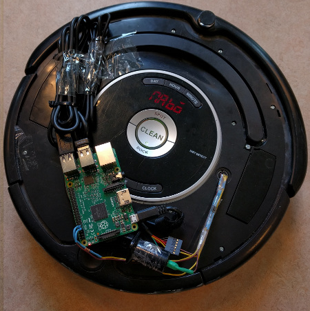

Click the image above to open the live video stream from the uNabto Roomba in a new window. If no video is available, make sure you followed the steps laid out here
Data from Roomba
Remote control input field:
Welcome to the uNabto Roomba remote control. This is a basic demonstration of the uNabto framework.
The available commands are: W (forward), S (reverse), A (rotate counterclockwise), D (rotate clockwise), K (Play DSB), L (Play Dixie Horn), P (Power on Roomba) and O (Power off Roomba).